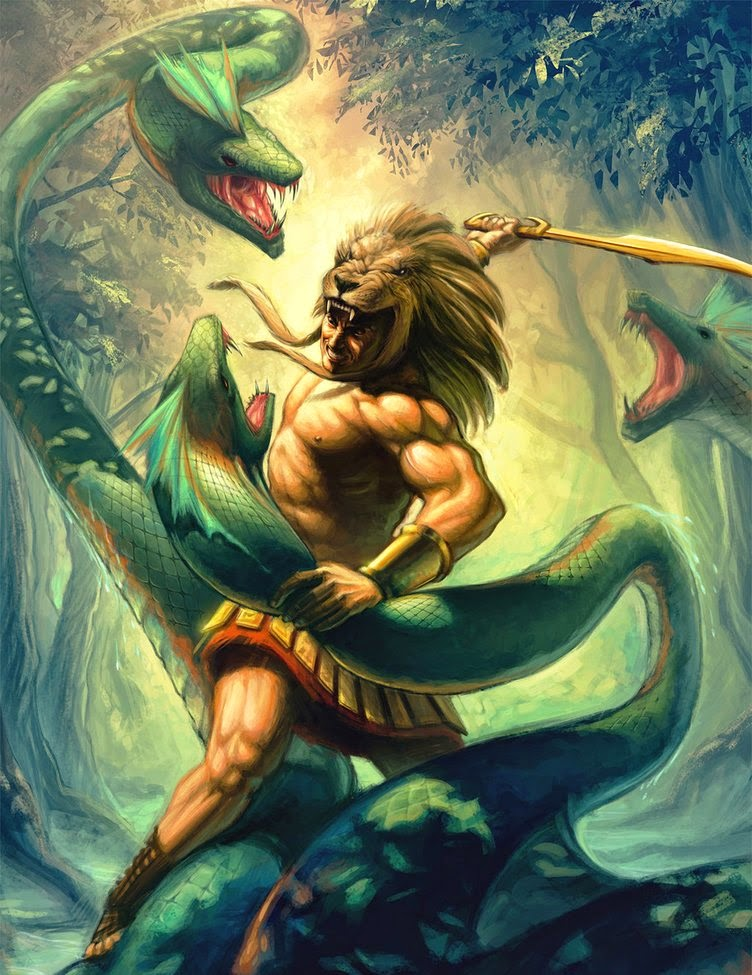
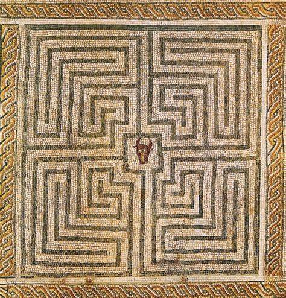

As histórias da Antiga Grécia
A Grécia Antiga é um dos períodos mais fascinantes e influentes da história humana, marcando o nascimento de muitos dos fundamentos da civilização ocidental.
Suas histórias, repletas de mitos, lendas e feitos históricos, refletem a riqueza cultural, filosófica e política de uma era que se estendeu do século VIII a.C. ao século VI d.C.
Os gregos antigos nos legaram narrativas épicas como a "Ilíada" e a "Odisseia" de Homero,
que não só capturam a essência do heroísmo e da tragédia, mas também fornecem uma janela para os valores e crenças da época.
Além dos mitos heroicos, a Grécia Antiga foi o palco de eventos históricos significativos, como as Guerras Médicas,
a ascensão e queda da democracia ateniense e as conquistas de Alexandre, o Grande.
Essas histórias são essenciais para entender a evolução da filosofia, literatura, arte e ciência, que ainda hoje influenciam o
mundo moderno. Assim, estudar as histórias da Grécia Antiga é não apenas uma viagem ao
passado, mas também uma exploração das raízes da nossa própria cultura e identidade.
Lendas
Hercules
Hércules (ou Héracles, em grego) é um dos heróis mais famosos da mitologia grega.
Filho de Zeus e da mortal Alcmena, Hércules é conhecido por sua força descomunal e por realizar os Doze Trabalhos,
tarefas aparentemente impossíveis impostas por Euristeu, rei de Micenas.
Entre esses trabalhos estão a captura do Leão de Nemeia, a obtenção das Maçãs das Hespérides e a captura do Cérbero,
o cão de três cabeças guardião do submundo.

Labirinto do Minotauro
O Minotauro, uma criatura metade homem e metade touro, habitava um labirinto construído pelo arquiteto Dédalo na ilha de Creta. Este labirinto foi encomendado pelo rei Minos para aprisionar o Minotauro. Teseu, príncipe de Atenas, voluntariou-se para matar a besta e foi ajudado por Ariadne, filha de Minos, que lhe deu um fio para que ele pudesse encontrar o caminho de volta depois de matar o Minotauro.

A Caixa de Pandora
Pandora foi a primeira mulher criada por Zeus como punição à humanidade. Ela recebeu uma caixa (ou jarro) que continha todos os males do mundo, com instruções para não abri-la. Movida pela curiosidade, Pandora abriu a caixa, liberando doenças, sofrimento e outras calamidades sobre a humanidade. Assustada, ela fechou a caixa, restando apenas a esperança lá dentro.

Este site foi feito na oficina do Ensino Médio Senac Santa Cruz do Sul
Site feito por Ana Elisa Sprenger